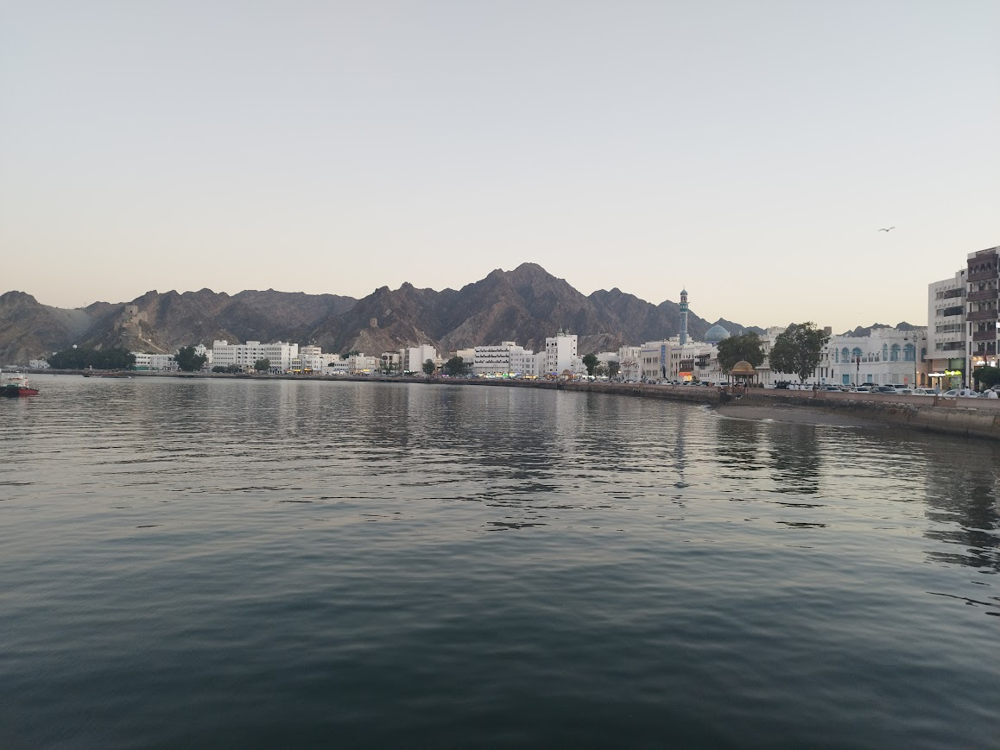

Last year I had the opportunity to visit Oman and explore a housing market in a region I have not delved into before.
The defining feature of the Omani housing market is a government scheme that allocates a 600m² plot of land to every citizen to build a house on. This began in 1984 for men over 21 and was extended in 2008 to include women over 24. I honestly find this incredible - the encouragement of all those eligible to create a self-build house on land given for free. Inhabitants can design homes that meet their family needs, wants, and artistic tastes.
Similarly generous schemes are available for social housing. There is a programme which provides new build homes through grant funding free of charge, whereby inhabitants receive full ownership after ten years. Another scheme provides grant to restore, maintain or extend an existing unit, and a third provides loans without any interest.

The 600m² Plot
While amazing in theory, the reality is messier. Applicants can only choose the region for their plot, not a specific location. Plots are allocated randomly, regardless of current residential or job locations, meaning recipients can be detached from their families and existing communities. The long waiting list also means it can take years to get an allocation, making it difficult to adjust to personal plans, needs, or financial capabilities. This is likely to worsen, with 44% of the Omani population under 17, meaning many more will become eligible in the coming years.


Many plots are also never built upon. One half of a couple may have a plot already before the other gets theirs, meaning they never build it out. They may speculate with the plot, keeping it undeveloped with the intention to sell later at a higher price.
These factors combine to encourage the defining architectural feature of Omani housing: low-rise single family villas surrounded by high-rise walls, spread out in uncanny fashion. Building codes demand the house to have a central position on its plot, with a 5m set back from the front and 3m from either side. They also limit the built-up area to 40% for each plot and must not exceed two floors and 8m in height. They are intended to provide maximum privacy, but in doing so require a huge amount of space.


Sprawl and Spacing
Town after town reveals monofunctional urban sprawl to an extent I’ve never seen before, creating a huge dependency on cars and long commuting distances. Each plot feels peculiarly suspended in voided space, set back far for other nearby villas or in small clusters where each villa is exposed to sun, wind, and moving sands on all sides. As Dr. Wolfgang Scholz notes, this leads to unsustainable land consumption that causes higher costs for infrastructure networks to stretch far but only accommodates a few people.

A Nation of Doors
As a final note, I have never been to a country with such an amazing diversity of ornate doors. Combinations of wood, metal, and paintwork provide beautiful entrances to domestic spaces.


Disclaimer: These posts reflect my best understanding of each market. They are based on conversations with locals and experts, academic articles, and other online publications while trying not to get bogged down in too much detail and keep things understandable and perhaps a little entertaining. If there is anything that is factually wrong or out of date, things that I’ve misunderstood, or extra nuances you think it important to note, please do get in touch!
Visual Appendix: Remaining Oman Archive


